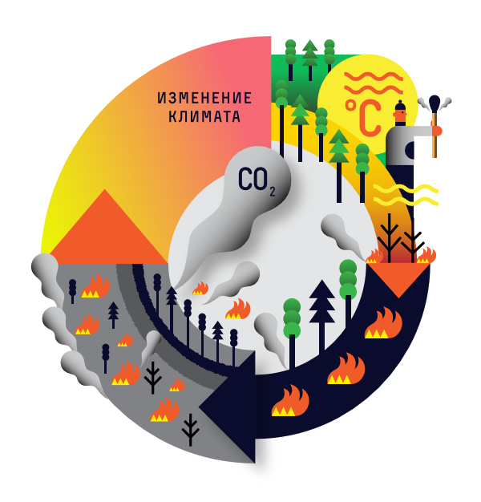
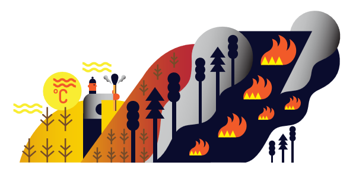
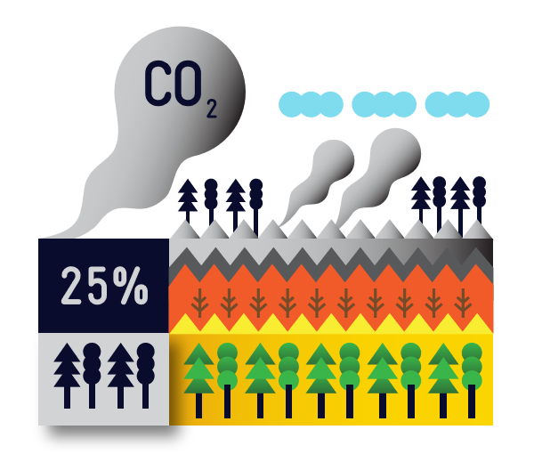

Как климат влияет на пожары?
Изменение климата создает для пожаров прекрасные, в буквальном смысле парниковые условия: всё становится сухим и
готовым загореться, у человека со спичкой появляется отличный шанс, огонь быстро набирает силу и начинает
уничтожать всё вокруг. Но это только половина картины. Разгораясь, пожар отапливает парник, там становится ещё
теплее. Огонь разгорается ещё жарче, в парнике делается ещё теплее. Получается замкнутый круг… Но не будем
сильно упрощать. Посмотрим, действительно ли он замкнутый. Начнем с климата.

Жарче климат — больше пожаров
Эта часть круга — наиболее заметная. Её мы просто видим и ощущаем с каждым годом всё сильнее. В нашем парнике
становится с каждым годом всё жарче и суше. Далеко за примером ходить не надо. В этом году, скажем, на Дальнем
Востоке, всю зиму почти не было снега. Весна была ранняя и тоже без особых осадков. Во многих местах, где лето
обычно короткое и прохладное, уже в мае было за тридцать. Всё это — последствия изменения климата.

Прошлогоднюю траву, торф и леса как будто специально подготовили для костра. Идеальные условия для человека со
спичкой. И он не заставил себя ждать: прямо после новогодних праздников на Дальнем Востоке загорелось. Пожарный
сезон стал фактически круглогодичным. Чем суше и теплее были условия, созданные климатическими изменениями, тем
ярче и жарче горело: Забайкалье, Китай, Канада…
Итак, понятно, что в условиях, которые создаются изменением климата (именно в условиях, а не по причине) пожаров
становится больше и они намного крупнее и катастрофичнее, чем раньше. Растущие температуры, тепловые волны и
сухая погода делают растительность легковоспламеняемой и приводят к еще более сильным и неуправляемым
пожарам.
Больше горит — быстрее меняется климат
В этой части не всё так очевидно и сразу заметно глазу, хотя если встать посреди огромного поля с горящей травой
или посмотреть на верховой пожар в лесу, становится намного понятнее. Но дело не только в том, что жарко от
пламени. Научные исследования говорят, что есть несколько факторов, от которых климат изменяется сильнее и
быстрее.
Углекислый газ
В процессе пожаров, что бы ни горело: трава, тростник, торф, лес — в атмосферу выбрасывается CO2. Огромное
количество углекислого газа выделяется, когда горит лес и особенно — торф. Торфяники — большие «склады»
углерода, и когда они загораются весь этот углерод попадает в атмосферу. Углекислый газ образуется и после
пожаров: погибшие, но не до конца сгоревшие деревья гниют и разлагаются, и тоже выделяют CO2. Причём в
зависимости от региона, его может образовываться примерно столько же, а то и больше, чем при самом горении.

Идея проекта
Мы хотим создать станцию которая будет следить за
лесными пожарами и отпровлять сообщения пожарным
или роботу квадрокоптеру
который будет тушить пожар ,
так сказать создать автоматизированую систему пожара-тушения лесов.Наблюдать за этим я хочу так -
переодически выпускать эти же квадрокоптеры
так же квадрокоптеры меньше загрязняют природу , чем машин
Наша станция следит за местами с возможным возгоранием.Если она находит такую местность ,то передаёт сигнал
квадрокоптеру и он прилетает и орошает эту местност.Так же у нас есть ещё один робот который выжигает сухую траву,тем самым предотвращает её возгорание ёще эото робот может предотвращать возникновение пожара поджигая близ-лежащую траву по периметру очага возгарания.Программа выщитывает уровень возможного воспломинения с помощью прогноза погоды и квадрокоптера который летает и следит за местностью с помощью камеры .
Спасибо за внимание!